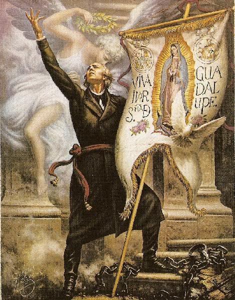

1. Mito: El Grito de Dolores no ocurrió la
noche del 15 de septiembre
Existe la creencia popularizada de que el cura Miguel Hidalgo y Costilla dio el Grito de Dolores durante la noche del 15 de septiembre. Sin embargo, la evidencia historiográfica demuestra que el llamado a las armas ocurrió en la madrugada del 16 de septiembre de 1810, aproximadamente a las 5:00 a.m., cuando Hidalgo mandó tocar las campanas de la parroquia de Dolores para convocar a los feligreses a la misa dominical y, posteriormente, incitarlos a rebelarse. La costumbre de conmemorar el Grito desde la noche del 15 comenzó a gestarse a mediados del siglo XIX con celebraciones cívicas y serpentinas, pero se consolidó como protocolo oficial durante la dictadura de Porfirio Díaz, quien adaptó la fiesta pública nocturna para hacerla coincidir de manera estratégica con el festejo de su propio cumpleaños.